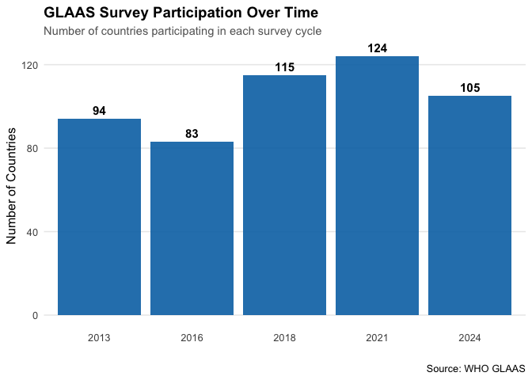

An R data package providing comprehensive access to the UN-Water Global Analysis and Assessment of Sanitation and Drinking-water (GLAAS) dataset. The WHO GLAAS survey collects data on water, sanitation, and hygiene (WASH) systems, policies, and financing from countries worldwide.
While the GLAAS data is available for visualization and download on the official GLAAS portal, this package consolidates the entire dataset in one place, making it easy to perform custom analyses, generate reports, and explore meta-information across survey cycles.
Installation
You can install glass.updated from GitHub:
# install.packages("devtools")
devtools::install_github("openwashdata/glass.updated")Note on package size: Due to the large size of the dataset (259,313 rows × 121 variables), this package is not available on CRAN. However, the data uses lazy loading, which means the dataset is only loaded into memory when you explicitly access it (e.g., with data("glaas") or by referencing glaas directly). This keeps the package footprint small until you actually need the data.
Data Structure
The package contains a single dataset: glaas
- Dimensions: 259,313 rows × 121 variables
-
Coverage: Multiple GLAAS survey cycles (2013, 2016, 2018, 2021,
- Geographic scope: WHO Member States and territories
- Thematic areas: Finance, human resources, monitoring, systems, targets, and more
Key Variables
The dataset is organized around several core dimensions:
Geographic Information:
-
country_code,country_name: ISO codes and country names -
parent_location_name: WHO regions (e.g., Eastern Mediterranean Region) -
region_sdg_name: SDG regional groupings -
region_world_bank_name: World Bank income classifications
Indicators:
-
indicator_code,indicator_prefix: Unique indicator identifiers -
indicator_name: Full description of WASH indicators -
grand_parent,parent: Thematic and sub-thematic categorization
Temporal Information:
-
time_period,data_year: Survey year -
survey_round: GLAAS survey cycle -
is_comparable_*: Flags for cross-cycle comparability
Data Values:
-
value_code_numeric: Numeric indicator values -
value_text: Categorical or text responses -
value_amount: Financial data (where applicable) -
unit_of_measure: Units (%, USD, etc.)
Disaggregation:
-
dimension1_value,dimension2_value, etc.: Service types (drinking-water, sanitation), settings (urban, rural), and other breakdowns
For a complete description of all 121 variables, see ?glaas after loading the package.
Usage Examples
library(glass.updated)
library(tidyverse)
#> ── Attaching core tidyverse packages ──────────────────────── tidyverse 2.0.0 ──
#> ✔ dplyr 1.1.4 ✔ readr 2.1.5
#> ✔ forcats 1.0.0 ✔ stringr 1.5.1
#> ✔ ggplot2 4.0.0 ✔ tibble 3.3.0
#> ✔ lubridate 1.9.4 ✔ tidyr 1.3.1
#> ✔ purrr 1.1.0
#> ── Conflicts ────────────────────────────────────────── tidyverse_conflicts() ──
#> ✖ dplyr::filter() masks stats::filter()
#> ✖ dplyr::lag() masks stats::lag()
#> ℹ Use the conflicted package (<http://conflicted.r-lib.org/>) to force all conflicts to become errors
# Load the dataset
data("glaas")
# Plot 1: Survey participation over time
glaas |>
group_by(time_period) |>
summarise(n_countries = n_distinct(country_name)) |>
ggplot(aes(x = factor(time_period), y = n_countries)) +
geom_col(fill = "#0072B2", alpha = 0.9) +
geom_text(aes(label = n_countries), vjust = -0.5, size = 4, fontface = "bold") +
labs(
title = "GLAAS Survey Participation Over Time",
subtitle = "Number of countries participating in each survey cycle",
x = "",
y = "Number of Countries",
caption = "Source: WHO GLAAS"
) +
theme_minimal(base_size = 12) +
theme(
plot.title = element_text(face = "bold", size = 14),
plot.subtitle = element_text(color = "grey40", size = 11),
panel.grid.major.x = element_blank(),
panel.grid.minor = element_blank()
)
# Plot 2: Participation by World Bank income group
glaas |>
filter(!is.na(region_world_bank_name)) |>
group_by(time_period, region_world_bank_name) |>
summarise(n_countries = n_distinct(country_name), .groups = "drop") |>
mutate(region_world_bank_name = factor(
region_world_bank_name,
levels = c("Low income", "Lower middle income", "Upper middle income", "High income")
)) |>
ggplot(aes(
x = factor(time_period),
y = n_countries,
fill = region_world_bank_name
)) +
geom_col(position = "stack", alpha = 0.9) +
scale_fill_brewer(palette = "Set2", name = "Income Group") +
labs(
title = "GLAAS Participation by World Bank Income Classification",
subtitle = "Distribution of participating countries across income groups",
x = "",
y = "Number of Countries",
caption = "Source: WHO GLAAS"
) +
theme_minimal(base_size = 12) +
theme(
plot.title = element_text(face = "bold", size = 14),
plot.subtitle = element_text(color = "grey40", size = 11),
legend.position = "bottom",
panel.grid.major.x = element_blank(),
panel.grid.minor = element_blank()
) +
guides(fill = guide_legend(nrow = 2))
# Plot 3: Participation by UNICEF region
glaas |>
filter(!is.na(region_unicef_reporting_name)) |>
group_by(time_period, region_unicef_reporting_name) |>
summarise(n_countries = n_distinct(country_name), .groups = "drop") |>
ggplot(aes(
x = factor(time_period),
y = n_countries,
fill = region_unicef_reporting_name
)) +
geom_col(position = "dodge", alpha = 0.85) +
scale_fill_viridis_d(option = "turbo", name = "UNICEF Region") +
labs(
title = "Regional Representation in GLAAS Surveys",
subtitle = "Number of participating countries by UNICEF reporting region",
x = "",
y = "Number of Countries",
caption = "Source: WHO GLAAS"
) +
theme_minimal(base_size = 12) +
theme(
plot.title = element_text(face = "bold", size = 14),
plot.subtitle = element_text(color = "grey40", size = 11),
legend.position = "bottom",
panel.grid.major.x = element_blank(),
panel.grid.minor = element_blank()
) +
guides(fill = guide_legend(nrow = 3, byrow = TRUE))
# Plot 4: Thematic coverage
glaas |>
filter(!is.na(grand_parent_text)) |>
group_by(time_period, grand_parent_text) |>
summarise(n_indicators = n_distinct(indicator_code), .groups = "drop") |>
ggplot(aes(
x = factor(time_period),
y = n_indicators,
group = grand_parent_text,
color = grand_parent_text
)) +
geom_line(linewidth = 1.2, alpha = 0.9) +
geom_point(size = 3, alpha = 0.9) +
scale_color_brewer(palette = "Dark2", name = "Thematic Area") +
labs(
title = "Evolution of GLAAS Indicator Coverage",
subtitle = "Number of indicators tracked per thematic area across survey cycles",
x = "",
y = "Number of Indicators",
caption = "Source: WHO GLAAS"
) +
theme_minimal(base_size = 12) +
theme(
plot.title = element_text(face = "bold", size = 14),
plot.subtitle = element_text(color = "grey40", size = 11),
legend.position = "bottom",
panel.grid.minor = element_blank()
) +
guides(color = guide_legend(nrow = 2))
Contributing
Contributions to improve the package are welcome! Here’s how you can help:
- Report issues: If you find bugs or have suggestions, please open an issue
- Submit pull requests: Fork the repository, make your changes, and submit a PR
- Improve documentation: Help expand examples or clarify variable descriptions
- Add features: Suggest or implement helper functions for common analyses
When contributing, please:
- Follow the existing code style
- Update documentation as needed
- Add examples for new functionality
- Ensure the package builds without errors (
devtools::check())
Citation
If you use this package in your research or publications, please cite both the package and the original GLAAS data source:
Package citation:
openwashdata (2026). glass.updated: WHO GLAAS Dataset for R.
R package version 0.0.0.9000.
https://github.com/openwashdata/glass.updatedOriginal data source:
License
The package code is licensed under CC BY 4.0. The GLAAS data is provided by the World Health Organization. Please refer to the GLAAS data portal for specific terms of data use.